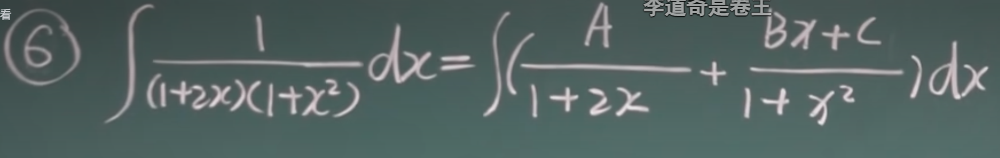

高等数学教程（3）
高等数学教程（8）不定积分
这一章内容通俗的说：就是求导的反向操作：我们需要求出谁求导的到现在的东西
定义
假设一个函数$f(x)$是一个函数$F(x)$求导的结果，那么称$F(x)$是$f(x)$的一个愿函数
这是因为$F(x)+C$(C是一个常数)求导也是$f(x)$
原函数存在定理：连续的函数一定有原函数
说了这么多，我们又该怎么表示一个函数的原函数呢
比如说：$\int x^2dx=\frac{x^3}{3}+C$
但是注意：这个容易错：$\int \frac{1}{x}dx=\ln{|x|}+C$
因为（x<0）下$\ln{x}$无定义，可以把$\frac{-1}{-x}$看，这样就好了。
下面来看一些式子：
说明了积分号在内微分号在外的式子，没有常数C（本质是$df(x)=f’(x)dx$）
说明了积分号在外微分号在内的式子，有常数C（本质是$\int f(x)dx=F(x)+C$）
积分表
幂函数的积分
常数的不定积分：
不定积分的性质
1）$\int [f(x)\pm g(x)]dx=\int f(x)dx \pm \int g(x)dx$
2)$\int kf(x)dx=k\int f(x)dx$
第一类换元积分（凑微分法）
首先回到这里：$\int 1 dF(u)=F(u)+C$,现在假设$u=\varphi (x)$,这样，我们就有$\int 1dF(\varphi(x))=F(\varphi(x))+C$,进一步的：$\int f(\varphi(x))\varphi ‘(x)dx=F(\varphi(x))+C$
说白了，就是复合求导的逆过程，我们的核心过程就是通过合并至d后面从而化简函数：
1）$\int 2\cos 2xdx$
解：$\int \cos 2xd(2x)=sin(2x)+C$
2)$\int \frac{1}{3+2x}dx$
解：$\int \frac{1}{2}\frac{1}{3+2x}d(2x+3)=\frac{1}{2}\ln|(2x+3)|+C$
3)$\int 2x e^{x^2}dx$
解：$\int e^{x^2}dx^2= e^{x^2}+C$
4)$\int x\sqrt{1-x^2}dx$
解：$-\frac{1}{2}\int \sqrt{1-x^2}d(1-x^2)=-\frac{1}{3}(1-x^2)^{1.5}+C$
5)$\int \frac{x^2}{(x+2)^3}dx$
解:
$令:x+2=u$,$\int \frac{(u-2)^2}{u^3}du=\int (\frac{1}{u}-\frac{4}{u^2}+\frac{4}{u^3})du=\ln |u|+\frac{4}{u}-2\frac{1}{u^2}$
于是:$\ln |x+2|+\frac{4}{x+2}-2\frac{1}{(x+2)^2}$
6)$\int \frac{1}{a^2+x^2}dx(a\neq 0)$
解：$=\frac{1}{a}\int \frac{1}{1+(\frac{x}{a})^2}d(\frac{x}{a})=\frac{1}{a}\arctan \frac{x}{a}+C$
7)$\int \frac{dx}{\sqrt{a^2-x^2}}$
解：$\frac{1}{a}\int \frac{dx}{\sqrt{1-(\frac{x}{a})^2}}=\arcsin \frac{x}{a}+C$
8)$\int \frac{dx}{x^2-a^2}$
解：$\frac{1}{2a}\int (\frac{1}{x-a}-\frac{1}{x+a})dx=\frac{1}{2a}\ln|\frac{x-a}{x+a}|+C$
9)$\int \frac{dx}{x(1+2\ln x)}$
解：$\int \frac{d\ln{x}}{1+2\ln x}=\frac{1}{2}\ln|1+2\ln x|+C$
10）$\int \frac{e^{3\sqrt{x}}}{\sqrt{x}}dx$
解：$=2\int e^{3\sqrt{x}}d{\sqrt{x}}=\frac{2}{3}e^{3\sqrt{x}}+C$
11)$\int \sin^3xdx$
解：$\int sin^2xd\cos x=\int (1-cos^2x)d\cos x=-\cos x-\frac{1}{3}\cos^3x+C$
12)$\int \sin^2x\cos^5xdx$
解：$\int \sin^2\cos^4xd\sin x=\int \sin^2x(1-\sin^2x)^2d\sin x=\frac{\sin^3x}{3}-\frac{2\sin^5x}{5}+\frac{\sin^7x}{7}+C$
13)$\int \tan xdx$
解：
$\int \frac{\sin x}{\cos x}dx=-\int \frac{1}{\cos x}d\cos x=-\ln|cos(x)|+C$
14)$\int \cos^2xdx$
解：$\int \frac{1+\cos2x}{2}dx=\frac{x}{2}+\frac{\sin 2x}{4}+C$
15)$\int \sin^2x\cos^4xdx$
解：$\int \frac{1-\cos{2x}}{2}(\frac{1+\cos{2x}}{2})^2dx=\frac{1}{8}(x+\frac{1}{2}\sin 2x-\frac{1}{2}x-\frac{1}{8}\sin 4x-\frac{1}{2}(\sin 2x-\frac{sin^3 2x}{3}))+C$
16)$\int \sec^6xdx$
解：$\int \sec^4xd\tan x=\int (\tan^2x+1)^2d\tan x=\frac{\tan^5x}{5}+\frac{2\tan^3x}{3}+\tan x+C$
17)$\int \csc xdx$
解：$\int \frac{1}{\sin x}dx=\frac{\cos \frac{x}{2}dx}{2\sin \frac{x}{2}\cos^2\frac{x}{2}}=\int \frac{\sec^2\frac{x}{2}}{\tan\frac{x}{2}}d(\frac{x}{2})=\int \frac{d\tan\frac{x}{2}}{\tan \frac{x}{2}}=\ln|\tan \frac{x}{2}|+C$
总结下：三角函数者：奇次提，偶次被倍角公式替换
第二类换元积分
我们把d()内的东西往外提，化而言之：就是换元$x=\varphi(t)$再求积分：
$\int f(x)dx=\int f(\varphi(t))\varphi’(t)dt$
1)$\int \sqrt{a^2-x^2}dx(a>0)$
解:令：$x=a\sin t,t\in(-\frac{\pi}{2},\frac{\pi}{2})$
故：$\int \sqrt{a^2-x^2}dx=a\cos tdx$
$dx=a\cos t$
因此：$\int a^2\cos^2tdt=a^2(\frac{t}{2}+\frac{\sin2t}{4})+C=a^2t+a^2\frac{\sin t\cos t}{2}+C$
又$\sin t=\frac{x}{a},\cos t=\frac{\sqrt{a^2-x^2}}{a}$
这样：$\frac{a^2}{2}\arcsin\frac{x}{a}+\frac{x}{2}\sqrt{a^2-x^2}+C$
2)$\int \frac{dx}{\sqrt{x^2+a^2}}(a>0)$
现令：$x=a\tan t$
则：$\int \frac{dx}{a\sec x}$
又：$dx=a\sec^2 tdt$
那么：$\int \sec tdt=\ln|\sec t+\tan t|+C$
我们可以使用三角形法来看：
这下，我们找到了：$\tan t=\frac{x}{a},\sec t= \frac{\sqrt{x^2+a^2}}{a}$
于是：$=\ln|\frac{\sqrt{x^2+a^2}}{a}+\frac{x}{a}|+C=\ln(\sqrt{x^2+a^2}+x)+C’$
3)$\int \frac{dx}{\sqrt{x^2-a^2}}$
解：
令：$x=a\sec t,则：\int \frac{dx}{a\tan t}$
$dx=a\sec t\tan tdt$
于是：$\int \sec tdt=\ln(x+\sqrt{x^2-a^2})+C$
小总结：
$\sqrt{a^2-x^2}\longrightarrow x=a\sin t,|a\cos t|$
$\sqrt{x^2-a^2}\longrightarrow x=a\sec t,|a\tan t|$
$\sqrt{a^2+x^2}\longrightarrow x=a\tan t,|a\sec t|$
4)$\int \frac{\sqrt{a^2-x^2}}{x^4}dx$
解：令：$x=\frac{1}{t}$得：
$dx=-\frac{1}{t^2}dt,-\int (a^2t^2-1)^{0.5}|t|dt$
由此：$x>0下 ,=-\frac{(a^2-x^2)^{1.5}}{2a^2x^3}+C$
或者使用三角函数也可以：
分部积分法
我们来看：$\int udv=uv-\int vdu$
我们就可以化简积分了：如：
1)$\int xe^xdx=\int xde^x=xe^x-e^x=(x-1)e^x+C$
有的时候，我们可以尝试的去试试看谁做微分是简单的
往往$e^x$要放到微分里。
2)$\int x\cos xdx=\int xd\sin x=x\sin x-\int \sin xdx=x\sin x+\cos x+C$
往往三角函数要放到微分里。
那这样呢：
$\int \sin x e^xdx$
注意：$=\sin xe^x-\int e^x\cos xdx=\sin x e^x-\cos xe^x-\int \sin x e^xdx$
居然出现了我们要求的东西：
于是：$\int \sin x e^xdx=\frac{1}{2}(\sin x e^x-\cos xe^x)$
3)$\int \arccos xdx=x\arccos x-\frac{1}{2}\int \frac{d(1-x^2)}{\sqrt{1-x^2}}=x\arccos x-\sqrt{1-x^2}+C$
有理函数
这是针对$\frac{P(x)}{Q(x)}$的有理分式的积分方法：我们主要是添项拆项从而分离成若干简单分式的和差，从而方便我们的积分
1）P(x)的阶高于Q(x)
我们分离常数使之所有的子分式的分母阶比分子高：
2）P(x)的阶低于Q(x)
i.分母一阶的，直接$\ln$
ii.分母二阶的：
可以因式分解的：分解因式化简
不可以因式分解的：配方后变成$(ax+b)^2+C$的$\arctan$类型积分
iii.分子分母差一次、
把分子扔进d里面升次
iv.一般的
我们假设一个式子可以分解成若干的分式和，其分式的特点是：分子比分母底一阶，分子假设为全项的多项式：
如

根式：
令t为根式，换元即可